🔹Spring Data¶
Spring Data es un proyecto dentro del ecosistema Spring que proporciona herramientas y abstracciones para facilitar el acceso a bases de datos y otras fuentes de datos de manera eficiente y consistente.
Su objetivo principal es simplificar la interacción con diferentes tipos de bases de datos, tanto relacionales (como PostgreSQL o MySQL) como NoSQL (por ejemplo MongoDB o Cassandra), reduciendo la cantidad de código necesario y unificando la forma de trabajar con los datos.
¿Para qué se utiliza?
1️⃣ Acceso Simplificado a Datos:
- Reduce la necesidad de escribir consultas SQL complejas o código JDBC al exponer métodos predefinidos para operaciones comunes.
- Permite realizar operaciones CRUD (Crear, Leer, Actualizar, Eliminar) con facilidad.
2️⃣ Abstracción de Repositorios:
Ofrece la interfaz Repository y subinterfaces como CrudRepository y JpaRepository que proporcionan métodos estándar para la gestión de entidades en bases de datos relacionales.
3️⃣ Consultas Personalizadas:
Permite escribir consultas personalizadas mediante anotaciones como @Query. También admite la creación de métodos de consulta basados en el nombre del método, como findByNombre(String nombre).
4️⃣ Compatibilidad con Múltiples Tecnologías de Bases de Datos:
- Relacionales: Mediante JPA (Java Persistence API).
- NoSQL: MongoDB, Redis, Neo4j, Cassandra, etc.
- Buscadores: Elasticsearch, Solr.
5️⃣ Configuración Declarativa:
Al integrar Spring Data con Spring Boot, se pueden configurar muchas opciones mediante propiedades en application.properties, evitando configuraciones manuales detalladas.
6️⃣ Integración con Spring Boot:
Con dependencias específicas como spring-boot-starter-data-jpa o spring-boot-starter-data-mongodb, Spring Data se integra perfectamente con el resto del ecosistema de Spring.
Principales Módulos de Spring Data
En lugar de proporcionar una única solución, Spring Data está compuesto por varios módulos, cada uno diseñado para un tipo concreto de tecnología de persistencia, como bases de datos relacionales, NoSQL o sistemas de búsqueda. Gracias a esta estructura modular, el desarrollador puede cambiar la tecnología de persistencia sin modificar la arquitectura general de la aplicación.
- Spring Data JPA:: Proporciona una integración con JPA para bases de datos relacionales. Es ideal para trabajar con entidades Java mapeadas a tablas de bases de datos. JPA es la especificación para persistir, leer y gestionar data desde los objetos Java a la base de datos.
- Spring Data MongoDB:: Facilita el acceso a bases de datos MongoDB, una base de datos NoSQL orientada a documentos.
- Spring Data Redis:: Para aplicaciones que necesitan interactuar con Redis, una base de datos en memoria.
- Spring Data Cassandra:: Proporciona soporte para bases de datos distribuidas como Cassandra.
- Spring Data Elasticsearch:: Simplifica las interacciones con Elasticsearch, un motor de búsqueda y análisis.
🔹Spring Data JPA¶
Spring Data JPA es parte de Spring Framework. Es un módulo de Spring Data que sirve para simplificar el acceso a bases de datos relacionales usando JPA (Java Persistence API). Permite trabajar con bases de datos utlizando objetos (clases) sin tener que escribir SQL ni código repetitivo.
Con Spring Data JPA:
- Solo defines entidades (@Entity)
- Creas interfaces Repository
- Spring genera automáticamente el código
🔹Anotaciones JPA¶
| Categoría | Anotación | Descripción |
|---|---|---|
| Mapeo JPA | @Entity |
Marca una clase como entidad JPA |
@Table |
Especifica el nombre de la tabla | |
@Id |
Indica la clave primaria | |
@GeneratedValue |
Define cómo se genera la clave primaria | |
@Column |
Configura una columna | |
@JoinColumn |
Define la clave foránea | |
@Lob |
Campo de gran tamaño | |
@Transient |
Excluye un campo del mapeo | |
| Relaciones JPA | @ManyToOne |
Relación muchos a uno |
@OneToMany |
Relación uno a muchos | |
@OneToOne |
Relación uno a uno | |
@ManyToMany |
Relación muchos a muchos | |
| Spring Data JPA | @Repository |
Marca una interfaz como repositorio Spring |
@Query |
Define una consulta personalizada (JPQL o SQL) | |
@Param |
Parámetros nombrados en consultas | |
@Modifying |
Consultas de actualización o borrado | |
@EnableJpaRepositories |
Habilita repositorios JPA | |
@EntityGraph |
Controla la carga de relaciones | |
| Transacciones | @Transactional |
Ejecuta métodos dentro de una transacción |
@Rollback |
Fuerza la reversión de la transacción (tests) |
Ejemplos
-
@Entity - Marca una clase como una entidad JPA, mapeada a una tabla en la base de datos.
@Entity data class User( @Id val id: Long, val name: String ) -
@Table - Especifica el nombre de la tabla que corresponde a la entidad.
@Entity @Table(name = "users") data class User( @Id val id: Long, val name: String ) -
@Id - Indica que un campo es la clave primaria de la tabla.
@Id val id: Long -
@GeneratedValue - Define cómo se genera el valor de la clave primaria.
Estrategias comunes:
GenerationType.IDENTITY,GenerationType.SEQUENCE, etc.
@Id
@GeneratedValue(strategy = GenerationType.IDENTITY)
val id: Long
-
@Column - Configura una columna de la tabla, como nombre, si es nula o única.
@Column(name = "user_name", nullable = false, unique = true) val name: String -
@ManyToOne, @OneToMany, @OneToOne, @ManyToMany
Define relaciones entre entidades.
@ManyToOne
val department: Department
-
@JoinColumn - Especifica la columna que actúa como clave foránea.
@ManyToOne @JoinColumn(name = "department_id") val department: Department -
@Lob - Indica que un campo es un objeto grande (texto o binario).
@Lob val description: String -
@Transient - Excluye un campo del mapeo de base de datos (no se almacena).
@Transient val calculatedField: String
- @Repository - Marca una interfaz o clase como repositorio Spring.
El data class representa la entidad (tabla), mientras que el @Repository se encarga de las operaciones de acceso a datos sobre esa entidad.
@Repository
interface UserRepository : JpaRepository<User, Long>
- @Query - Define una consulta personalizada usando JPQL o SQL nativo.
- Ejemplo (JPQL):
@Query("SELECT u FROM User u WHERE u.name = :name")
fun findByName(@Param("name") name: String): List<User>
- Ejemplo (SQL nativo):
@Query(value = "SELECT * FROM users WHERE user_name = :name", nativeQuery = true)
fun findByNameNative(@Param("name") name: String): List<User>
@Param - Define parámetros nombrados para consultas con @Query.
@Query("SELECT u FROM User u WHERE u.name = :name")
fun findByName(@Param("name") name: String): List<User>
@Modifying - Se utiliza con consultas @Query para operaciones de actualización o eliminación.
@Modifying
@Query("UPDATE User u SET u.name = :name WHERE u.id = :id")
fun updateName(@Param("id") id: Long, @Param("name") name: String)
@EnableJpaRepositories - Habilita la funcionalidad de Spring Data JPA y escanea paquetes para detectar repositorios.
@EnableJpaRepositories(basePackages = ["com.example.repository"])
@EntityGraph - Especifica cómo cargar las relaciones en una consulta, evitando lazy loading.
@EntityGraph(attributePaths = ["roles"])
fun findByName(name: String): User
-
@Transactional - Marca un método o clase para ejecutar dentro de una transacción.
@Transactional fun updateUserDetails(user: User) { ... } -
@Rollback - Utilizada en pruebas para forzar la reversión de una transacción.
@Transactional @Rollback fun testSaveUser() { ... }
🔹Consultas¶
Las consultas a la Base de datos las podemos hacer de dos maneras, utilizando la convención de nombres en funciones de Spring Data JPA o con la anotación @Query.
✔️ La convención de nombres se utiliza:
- En consultas sencillas y que no requieren lógica compleja ni múltiples combinaciones.
- Cuando quieres mantener un código más limpio y directo.
✔️ La anotación @Query se utiliza:
- En consultas complejas que involucren múltiples tablas, condiciones avanzadas o subconsultas.
- Si prefieres optimizar manualmente las consultas.
- Cuando la convención de nombres generaría un nombre de método excesivamente largo.
Convención de Nombres
Spring Data JPA permite definir métodos en repositorios siguiendo una convención de nombres específica. Esto simplifica la escritura de consultas comunes sin necesidad de usar JPQL o SQL. Para ello analiza el nombre de los métodos en el repositorio e interpreta su significado para generar consultas automáticamente.
La estructura básica es:
findBy + NombreDeCampo + Condición
1) findBy:
Indica que se busca una entidad en la base de datos. Alternativas:
- readBy (lectura de datos)
- queryBy (consulta de datos)
- getBy (obtener datos)
2) NombreDeCampo:
- Debe coincidir exactamente con el nombre del atributo en la entidad.
- Se puede incluir navegación de atributos para relaciones (EntidadRelacionada.Atributo).
3) Condición (opcional):
- Permite añadir operadores lógicos como And, Or, etc.
- Ejemplo: findByNombreAndEdad.
Ejemplos de métodos según la convención
-
Consultas simples
- Método: findByNombre(String nombre)
- Consulta generada:
SELECT * FROM entidad WHERE nombre = ?
-
Consultas con condiciones
- Método: findByNombreAndEdad(String nombre, Integer edad)
- Consulta generada:
SELECT * FROM entidad WHERE nombre = ? AND edad = ?
-
Consultas con orden
- Método: findByNombreOrderByEdadDesc(String nombre)
- Consulta generada:
SELECT * FROM entidad WHERE nombre = ? ORDER BY edad DESC
-
Consultas con relaciones. Si hay una relación entre entidades, se puede navegar por los campos relacionados:
- Método: findByComarcaNomC(String nomC)
- Consulta generada:
SELECT * FROM entidad e JOIN comarca c ON e.comarca_id = c.id WHERE c.nomC = ?
Palabras clave en la convención

A tener en cuenta
- Coincidencia exacta del nombre del campo: Los nombres deben coincidir con los atributos definidos en la entidad.
- Relaciones: Usa la notación EntidadRelacionada.Atributo para navegar entre tablas relacionadas.
- Orden: Los métodos pueden incluir palabras clave de ordenación, como OrderBy.
- Parámetros: Los métodos generados reciben parámetros en el mismo orden en que se declaran en el nombre del método.
🔹@Query
Estructura básica:
@Query("SELECT e FROM EntityName e WHERE e.property = :value")
fun findByProperty(@Param("value") value: String): List<EntityName>
- Se utilizan nombres de entidades y propiedades de las clases en lugar de nombres de tablas y columnas.
- Se puede navegar por relaciones entre entidades.
- :nombreParametro para parámetros dinámicos.
Ejemplo sencillo:
@Query("SELECT c FROM Comarca c WHERE c.provincia = :provincia")
fun findByProvincia(@Param("provincia") provincia: String): List<Comarca>
Ejemplo con relaciones:
Siguiendo con nuestro ejemplo de geo_ad, la consulta para buscar Institutos en una Provincia por Población Mínima quedaría así:
@Query("""
SELECT i FROM Institut i
JOIN i.poblacio p
JOIN p.comarca c
WHERE c.provincia = :provincia AND p.poblacion >= :minPoblacion
""")
fun findByProvinciaAndPoblacion(
@Param("provincia") provincia: String,
@Param("minPoblacion") minPoblacion: Int
): List<Institut>
Este mismo ejemplo utilizando convención de nombres quedaría así:
@Repository
interface InstitutRepository : JpaRepository<Institut, String> {
fun findByPoblacioComarcaProvinciaAndPoblacioPoblacionGreaterThanEqual(
provincia: String,
minPoblacion: Int
): List<Institut>
}
- findBy: Indica que es un método de consulta.
- PoblacioComarcaProvincia: Navega por las relaciones de las entidades Institut Poblacio -> Comarca para filtrar por la provincia.
- AndPoblacioPoblacionGreaterThanEqual: Navega por Institut -> Poblacio y aplica el filtro de población mínima.
Conclusión
A medida que las relaciones aumentan en complejidad, los nombres de los métodos pueden volverse difíciles de leer y mantener.
🔹 Ejemplo con Postgres (Entidad)¶
En este ejemplo vamos a crear una aplicación sencilla que acceda a una base de datos Postgres. Para ello utilizaremos la base de datos geo_ad, que ya conocemos de temas anteriores, y que se encuentra en el servidor externo 89.36.214.106. La aplicación simplemente mostrará la información de la tabla comarcas.
Para esta aplicación crearemos un nuevo proyecto, con la misma configuración que el anterior, pero añadiremos las dependencias necesarias de acceso a la Base de Datos.
Configurar el proyecto
1) Creamos el proyecto y lo configuramos desde File-->New-->Project:
- Elige Spring Boot.
-
Configura las siguientes opciones:
- Language: Kotlin
- Build System: Maven
-
Especifica un nombre para el proyecto: PrimerSpringMVC
- Última versión de JDK
- Última versión de Java
2) Posteriormente seleccionamos las dependencias necesarias:
Note
Como la aplicación accede a una Base de datos, necesitaremos las dependencias adicionales Spring Data JPA y PostgreSQL Driver.
- Spring Web (para el desarrollo de aplicaciones web)
- Thymeleaf (motor de plantillas para la vista)
- Spring Boot DevTools (opcional, para facilitar el desarrollo)
- Spring Data JPA (facilita la integración de aplicaciones Spring con bases de datos relacionales utilizando el marco JPA (Java Persistence API))
- PostgresSQL Driver (proporciona el controlador JDBC para conectarse a bases de datos PostgreSQL.)
Después de aceptar, y si todo ha ido correctamente, ya tendremos nuestro proyecto creado y preparado para añadir los elementos de programación.
 |
 |
|---|---|
Al iniciar nuestra aplicación, lo primero que observamos es que se crea una clase SpringJpaApplication que sirve como contenedor para la configuración de la aplicación. No necesita implementar métodos adicionales, ya que Spring Boot se encarga de todo gracias a la anotación @SpringBootApplication.
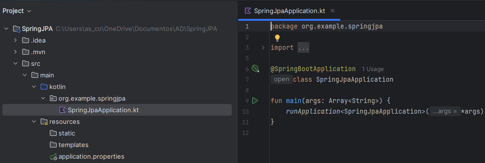
Crear la estructura del Proyecto
La estructura básica del proyecto debe reflejar el patrón MVC. Organiza las carpetas de la siguiente forma:
- Controladores: src/main/kotlin/org/tuapp/controller
- Vistas: src/main/resources/templates
- Recursos estáticos: src/main/resources/static
- Datos: src/main/kotlin/org/tuapp/model
- Repositorio: src/main/kotlin/org/tuapp/repository
Para ello crea los paquetes: controller, model y repository dentro de la carpeta src/main/kotlin/org/tuapp.

Implementación de la aplicación
Ahora ya podemos añadir la programación necesaria para nuestra aplicación siguiendo la estructura MVC creada. Dentro de cada paquete crearemos los siguientes archivos:
- Entidad JPA
Define las entidades que corresponden a las tablas existentes en la base de datos. No necesitas configuraciones especiales más allá de mapear las columnas. En nuestro caso definimos la entidad comarca y sus campos.
En el paquete model crea un archivo llamado comarca.kt
package org.example.springjpa.model
import jakarta.persistence.*
@Entity
@Table(name = "comarca")
class Comarca(
@Id
@Column(name = "nom_c")
var nomC: String = "",
@Column(name = "provincia")
var provincia: String? = null
)
- Repositorio
Crea un repositorio que permita ejecutar consultas sobre la tabla correspondiente.
Dentro del paquete repository, crea un archivo llamado ComarcaRepository.kt
package org.example.springjpa.repository
import org.example.springjpa.model.Comarca
import org.springframework.data.jpa.repository.JpaRepository
import org.springframework.stereotype.Repository
interface ComarcaRepository : JpaRepository<Comarca, String> {
fun findByProvincia(provincia: String): List<Comarca>
}
- Controlador
El controlador manejará las solicitudes GET para obtener información de la base de datos.
Dentro del paquete controller, crea un archivo llamado ComarcaRestController.kt
package org.example.springjpa.controller
import org.example.springjpa.model.Comarca
import org.example.springjpa.repository.ComarcaRepository
import org.springframework.web.bind.annotation.*
@RestController
@RequestMapping("/api/comarcas")
class ComarcaController(private val comarcaRepository: ComarcaRepository) {
// Endpoint para obtener todas las comarcas
@GetMapping
fun obtenerComarcas(): List<Comarca> = comarcaRepository.findAll()
}
-
@RestController: Combina @Controller y @ResponseBody. Devuelve directamente datos en formato JSON.
-
ObtenerComarcas(): Devuelve una lista de objetos comarca. Spring automáticamente convierte esta lista a JSON usando Jackson (que viene incluido con Spring Boot).
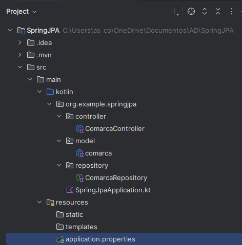
- Vistas
Las vistas pueden ser representadas por tecnologías como JSP, Thymeleaf, o JSON (en caso de APIs).
En Spring, tanto las vistas HTML como las respuestas JSON se generan automáticamente: las vistas se renderizan con Thymeleaf y los objetos se serializan a JSON sin configuración adicional.
En este ejemplo vamos a visualizar los datos en un navegador con formato JSON y más adelante lo haremos mediante Thymeleaf para ver ambos casos.
Configurar la conexión al Servidor Postgres:
En el archivo src/main/resources/application.properties configura la conexión a tu base de datos existente:
spring.datasource.url=jdbc:postgresql://<HOST>:<PUERTO>/<DB_NAME>
spring.datasource.username=<USUARIO>
spring.datasource.password=<CONTRASEÑA>
spring.jpa.hibernate.ddl-auto=update
Cambiaremos los datos de conexión al servidor externo: 89.36.214.106
spring.application.name=SpringJPA
spring.datasource.url=jdbc:postgresql://89.36.214.106:5432/geo_ad
spring.datasource.username=geo_ad
spring.datasource.password=geo_ad
Configuración básica de JPA
En una aplicación Spring Boot con Spring Data JPA, es fundamental definir explícitamente ciertos parámetros de configuración en el archivo application.properties. Estas propiedades permiten controlar el comportamiento de Hibernate, evitar efectos no deseados sobre la base de datos y facilitar la comprensión del funcionamiento interno del framework.
En el contexto de este proyecto, donde se trabaja con una base de datos PostgreSQL creada previamente, se establecen las siguientes propiedades con los siguientes objetivos:
-
Garantizar que Spring no modifique el esquema de la base de datos, manteniendo el control sobre tablas, claves y relaciones.
spring.jpa.hibernate.ddl-auto=none -
Visualizar las consultas SQL reales que Hibernate genera y ejecuta, con fines didácticos y de depuración.
spring.jpa.show-sql=true -
Indicar explícitamente el tipo de base de datos utilizada, asegurando que Hibernate emplea el dialecto y la sintaxis SQL correctos.
spring.jpa.database-platform=org.hibernate.dialect.PostgreSQLDialect
Por estos motivos, el archivo application.properties quedará finalmente así:

Ejecutar la aplicación
La aplicación estará disponible en http://localhost:8080/api/comarcas, o el puerto que hayas especificado, para listar las comarcas.
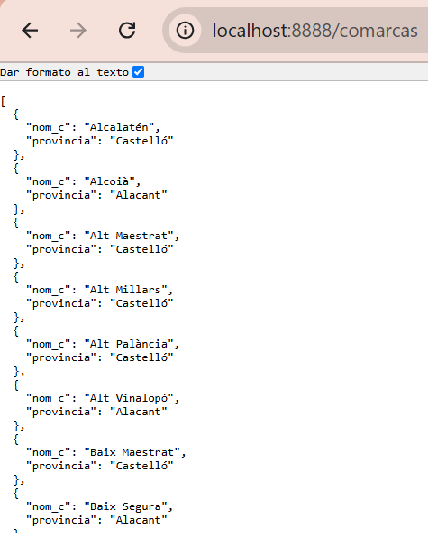
Sería deseable que el resultado se mostrara de manera más amigable para el usuario, por lo que en el siguiente ejemplo haremos los cambios necesarios para utilizar Thymeleaf y que el resultado se muestre en cajas de texto.
Thymeleaf para mostrar los resultados:
1) Configuración de dependencias. Asegúrate de tener la dependencia de Thymeleaf en tu archivo pom.xml. Esta dependencia la hemos seleccionado al configurar la aplicación y seguramente ya la tengamos incluida.
<dependency>
<groupId>org.springframework.boot</groupId>
<artifactId>spring-boot-starter-thymeleaf</artifactId>
</dependency>
2) Configurar Thymeleaf en application.properties
Añade las siguientes propiedades:
spring.thymeleaf.prefix=classpath:/templates/
spring.thymeleaf.suffix=.html
spring.thymeleaf.cache=false
3) Crear un nuevo Controlador. Cada controller debe tener rutas distintas, ya que devuelve HTML en lugar de JSON.
ComarcaMvcController.kt
package org.example.springjpa.controller
import org.springframework.stereotype.Controller
import org.springframework.ui.Model
import org.example.springjpa.repository.ComarcaRepository
import org.springframework.web.bind.annotation.*
@Controller //en lugar de @RestController
@RequestMapping("/comarcas")
class ComarcaControllerEntity(private val ComarcaRepository: ComarcaRepository) {
@GetMapping
fun listarComarcas(model:Model): String {
val comarcas = ComarcaRepository.findAll()
model.addAttribute("comarcas", comarcas)
return "comarcas" // Nombre de la plantilla HTML
}
}
4) Vistas
Para agregar un entorno de usuario amigable con cajas de texto y que los datos de la base de datos se muestren en una aplicación web, crea un archivo comarcas.html en el directorio src/main/resources/templates.
<!DOCTYPE html>
<html xmlns:th="http://www.thymeleaf.org">
<head>
<title>Lista de Comarcas</title>
</head>
<body>
<h1>Lista de Comarcas</h1>
<table border="1">
<tr>
<th>ID</th>
<th>Provincia</th>
</tr>
<tr th:each="comarca : ${comarcas}">
<td th:text="${comarca.nomC}">Nombre</td>
<td th:text="${comarca.provincia}">Provincia</td>
</tr>
</table>
</body>
</html>
- th:each: Itera sobre la lista de comarcas.
- th:text: Inserta dinámicamente el valor de un campo en el HTML.
Ejecuatar la aplicación
- Accede a http://localhost:8080/comarcas para listar las comarcas.
En el navegador, se mostrará una tabla HTML con las comarcas almacenadas en la base de datos. Los datos dinámicos se renderizan usando Thymeleaf. Este enfoque permite crear interfaces web amigables y bien estructuradas.
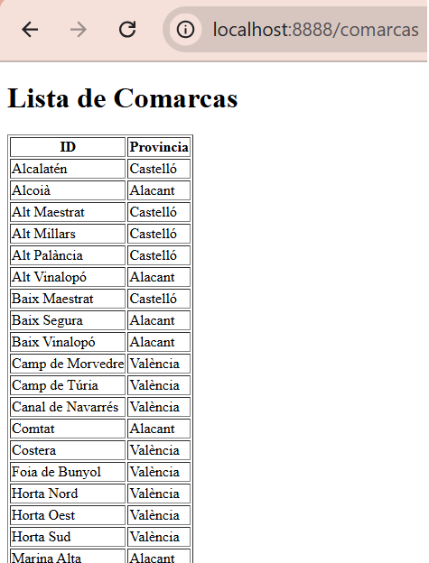
Consultas a la Base de datos
Con la anotación @Query en el repositorio, podemos realizar consultas personalizadas a la base de datos.
A continuación veremos los cambios que deberíamos hacer en los ficheros para poder hacer una consulta con parámetros y visualizar los datos tanto en json com con thymeleaf:
Cambios en los ficheros .kt:
ComarcaRepository
package org.example.springjpa.repository
import org.springframework.data.jpa.repository.Query
import org.springframework.data.repository.query.Param
import org.example.springjpa.model.Comarca
import org.springframework.data.jpa.repository.JpaRepository
import org.springframework.stereotype.Repository
@Repository
interface ComarcaRepository : JpaRepository<Comarca, String> {
@Query("SELECT c FROM Comarca c WHERE c.provincia = :provincia")
fun findComarcasporProvincia(@Param("provincia") provincia: String): List<Comarca>
}
ComarcaRestController
package org.example.springjpa.controller
import org.example.springjpa.model.Comarca
import org.example.springjpa.repository.ComarcaRepository
import org.springframework.web.bind.annotation.*
@RestController //en lugar de @Controller
@RequestMapping("/api/comarcas")
class ComarcaController(private val ComarcaRepository: ComarcaRepository) {
@GetMapping("/buscar")
fun BuscarComarcasporProvincia(@RequestParam provincia: String): List<Comarca> {
return ComarcaRepository.findComarcasporProvincia(provincia)
}
}
Anotaciones importantes
@Query: Permite definir consultas SQL personalizadas directamente en el repositorio. La consulta SELECT c FROM Comarca c WHERE c.provincia = :provincia selecciona todas las comarcas donde la columna provincia coincide con el parámetro provincia.
@Param: Vincula el parámetro de la consulta con el valor que se pasa desde el método. En este caso, @Param("provincia") conecta el parámetro provincia de la consulta SQL con el argumento del método.
@GetMapping y @RequestParam: Define un endpoint HTTP GET en el controlador. El parámetro provincia se obtiene de la URL. Por ejemplo, si queremos listar las comarcas de la provincia de Alacant, obtenemos:
http://localhost:8080/comarcas/buscar?provincia=Alacant
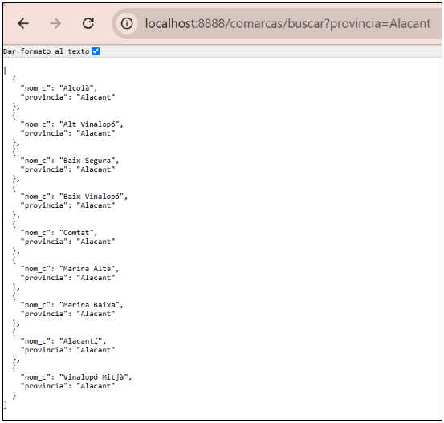
Visualizar la salida con Thymeleaf
Si la visualización la queremos hacer con Thymeleaf los cambios a realizar se harían solo en ComarcaMvcController, ya que el formulaio comarcas.html se puede seguir utilizando si queremos mostrar los mismos campos:
import org.springframework.stereotype.Controller
import org.example.primerspringmvc.repository.ComarcaRepository
import org.springframework.ui.Model
import org.springframework.web.bind.annotation.*
@Controller //en lugar de @RestController
@RequestMapping("/comarcas")
class ComarcaController(private val ComarcaRepository: ComarcaRepository) {
@GetMapping
fun listarComarcas(model:Model): String {
val comarcas = ComarcaRepository.findAll()
model.addAttribute("comarcas", comarcas)
return "comarcas" // Nombre de la plantilla HTML
}
@GetMapping("/buscar")
fun buscarComarcasPorProvincia(@RequestParam provincia: String, model: Model): String {
val comarcas= ComarcaRepository.findComarcasporProvincia(provincia)
model.addAttribute("comarcas", comarcas)
return "comarcas" // Nombre de la plantilla HTML
}
}
Y el resultado se vería así:
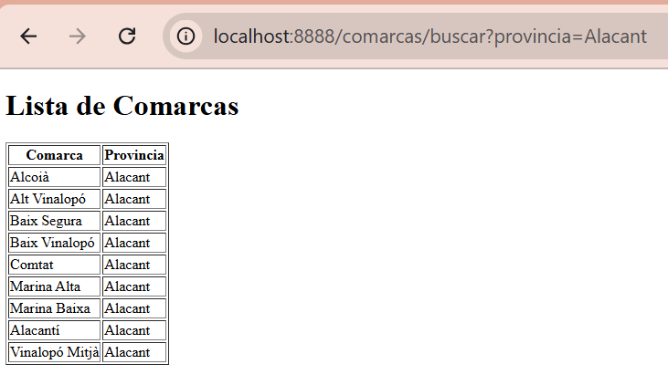
🔹Postgres en Docker ¶
Para no tener que instalarnos un servidor Postgres en nuestro equipo, podemos tener nuestra base de datos en un contenedor Docker.
En este caso, los cambios principales se centran en la configuración de conexión en la aplicación y en el despliegue del contenedor de PostgreSQL.
Antes de acceder al contenedor tenemos que crearlo. En nuestro caso crearemos un contenedor Docker de Postgres y posteriormente restauraremos la base de datos geo_ad en dicho contenedor, para poder disponer de la misma configuracion y los mismos datos que en el servidor externo.
Partimos del hecho que tenemos instalado Docker en nuesto equipo, en caso contario te dejo un pequeño tutorial de como instalarlo en el apartado Docker de esta unidad. Los pasos a seguir para crear dicho contendor son:
1. Ejecutar PostgreSQL en Docker
- Crea y ejecuta el contenedor de PostgreSQL:
docker run --name postgres-container -e POSTGRES_USER=admin -e POSTGRES_PASSWORD=admin -e POSTGRES_DB=demo -p 5432:5432 -d postgres
- POSTGRES_USER: Usuario de la base de datos.
- POSTGRES_PASSWORD: Contraseña del usuario.
- POSTGRES_DB: Nombre de la base de datos.
- -p 5432:5432: Mapea el puerto 5432 del contenedor al puerto 5432 de tu máquina.
- Verifica que el contenedor esté corriendo:
docker ps
- (Opcional) Conéctate al contenedor para verificar la base de datos, desde DBeaver, o desde el terminal:
docker exec -it postgres-container psql -U admin -d demo
2. Restaurar la base de datos en el contenedor con DBeaver:
Vamos a restaurar la base de datos geo_ad en la base de datos demo, que hemos creado con docker. Para ello os he dejado un archivo dump, en Aules, que contiene el backup de geo_ad. Lo siguiente será restaurar este backup en demo, siguiendo esto pasos:
-
Crear una nueva conexión en DBeaver al contenedor local:
- Host: localhost
- Puerto: 5432
- Usuario y contraseña: admin
- Base de datos: demo
-
Restaurar el archivo de respaldo: Haz clic derecho en la base de datos en el contenedor → Herramientas > Restaurar (Restore).
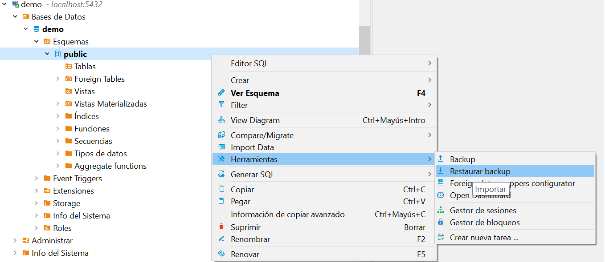
-
Archivo de respaldo: Selecciona el archivo de respaldo exportado, disponible en Aules.
Pulsa Start y espera a que termine la restauración. Una vez terminado selecciona cancelar para que no vuelva a realizar la restauración.
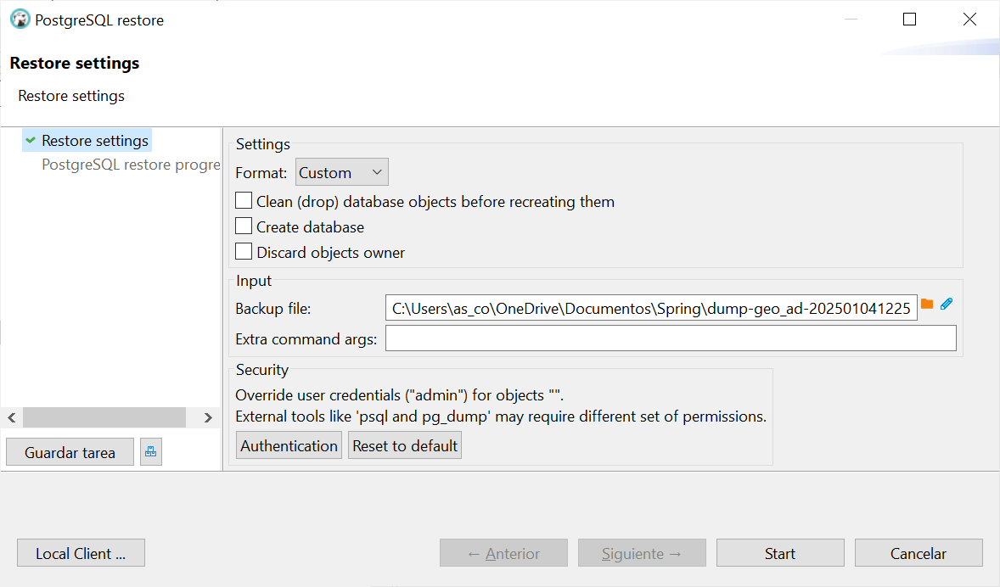 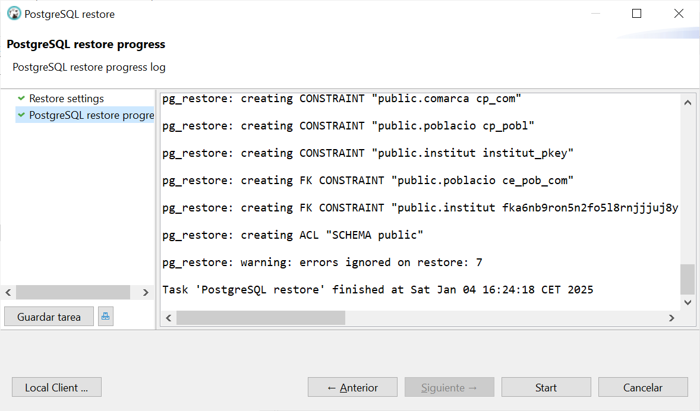
3. Cambios en la Configuración de la Aplicación
En el archivo application.properties, configura la conexión a PostgreSQL en el contenedor Docker.
spring.datasource.url=jdbc:postgresql://localhost:5432/demo
spring.datasource.username=admin
spring.datasource.password=admin
spring.jpa.hibernate.ddl-auto=none
spring.jpa.show-sql=true
spring.jpa.properties.hibernate.format_sql=true
Todos los cambios que necesitas para ejecutar la aplicación y que acceda a la base de datos que se encuentra en el contenedor son los anteriormente descritos. El resto de ficheros y estructura no se verá afectada.
Una vez tenemos la base de datos restaurada con los datos de geo_ad ya podemos ejecutar la aplicación y comprobar que los resultados son los mismos que si accedemos a la base de datos del servidor.
🔹CRUD básico¶
Siguiendo con el ejemplo del apartado anterior, que accede a una base de datos relacional Postgres en un contenedor Docker, en este apartado iremos más allá y veremos como realizar operaciones CRUD, ya que ahora la base de datos está en local y podemos hacer todas las modificaciones que necesitemos. Como ejemplo, haremos modificaciones sobre la tabla comarcas.
👉El único fichero a modificar será el controlador, ya que Las operaciones CRUD son acciones, y las acciones se gestionan en el Controller. Tambien se crearán nuevas vistas para visualizar los resultados con Thymeleaf:
ComarcaMvcController.kt
package org.example.springjpa.controller
import org.example.springjpa.model.Comarca
import org.springframework.stereotype.Controller
import org.springframework.ui.Model
import org.example.springjpa.repository.ComarcaRepository
import org.springframework.web.bind.annotation.*
@Controller //en lugar de @RestController
@RequestMapping("/comarcas")
class ComarcaControllerEntity(private val ComarcaRepository: ComarcaRepository) {
@GetMapping
fun listarComarcas(model:Model): String {
val comarcas = ComarcaRepository.findAll()
model.addAttribute("comarcas", comarcas)
return "comarcas" // Nombre de la plantilla HTML
}
@GetMapping("/buscar")
fun buscarComarcasPorProvincia(@RequestParam provincia: String, model: Model): String {
val comarcas= ComarcaRepository.findComarcasporProvincia(provincia)
model.addAttribute("comarcas", comarcas)
return "comarcas" // Nombre de la plantilla HTML
}
@GetMapping("/nueva")
fun mostrarFormularioNuevaComarca(model: Model): String {
model.addAttribute("comarca", Comarca())
return "nueva_comarca"
}
@PostMapping("/nueva")
fun guardarComarca(@ModelAttribute comarca: Comarca): String {
ComarcaRepository.save(comarca)
return "redirect:/comarcas"
}
@GetMapping("/editar/{id}")
fun mostrarFormularioEditarComarca(
@PathVariable id: String,
model: Model
): String {
val comarca = ComarcaRepository.findById(id)
.orElseThrow { IllegalArgumentException("Comarca no encontrada: $id") }
model.addAttribute("comarca", comarca)
return "editar_comarca"
}
@PostMapping("/editar/{id}")
fun actualizarComarca(
@PathVariable id: String,
@ModelAttribute comarca: Comarca
): String {
val comarcaExistente = ComarcaRepository.findById(id)
.orElseThrow { IllegalArgumentException("Comarca no encontrada: $id") }
// Solo se actualizan los campos editables
comarcaExistente.provincia = comarca.provincia
ComarcaRepository.save(comarcaExistente)
return "redirect:/comarcas"
}
@GetMapping("/eliminar/{id}")
fun eliminarComarca(@PathVariable id: String): String {
if (!ComarcaRepository.existsById(id)) {
throw IllegalArgumentException("Comarca no encontrada: $id")
}
ComarcaRepository.deleteById(id)
return "redirect:/comarcas"
}
}
👉Creamos las vistas que permiten gestionar las operaciones CRUD

-
nueva_comarca.html
<!DOCTYPE html> <html xmlns:th="http://www.thymeleaf.org"> <head> <meta charset="UTF-8"> <title>Nueva Comarca</title> </head> <body> <h1>Nueva Comarca</h1> <form th:action="@{/comarcas/nueva}" th:object="${comarca}" method="post"> <label for="nomC">Nombre:</label> <input type="text" th:field="*{nomC}" required> <br> <label for="provincia">Provincia:</label> <input type="text" th:field="*{provincia}" required> <br> <button type="submit">Guardar</button> </form> </body> </html> -
editar_comarca.html
<!DOCTYPE html> <html xmlns:th="http://www.thymeleaf.org"> <head> <meta charset="UTF-8"> <title>Editar Comarca</title> </head> <body> <h1>Editar Comarca</h1> <form th:action="@{/comarcas/editar/{id}(id=${comarca.nomC})}" th:object="${comarca}" method="post"> <label for="nomC">Nombre:</label> <input type="text" th:field="*{nomC}" readonly> <br> <label for="provincia">Provincia:</label> <input type="text" th:field="*{provincia}" required> <br> <button type="submit">Actualizar</button> </form> </body> </html> -
eliminar_comarca.html
<!DOCTYPE html> <html xmlns:th="http://www.thymeleaf.org"> <head> <meta charset="UTF-8"> <title>Eliminar Comarca</title> </head> <body> <h1>Eliminar Comarca</h1> <p>¿Estás seguro de que deseas eliminar la siguiente comarca?</p> <ul> <li><strong>Nombre:</strong> <span th:text="${comarca.nomC}">Nombre</span></li> <li><strong>Provincia:</strong> <span th:text="${comarca.provincia}">Provincia</span></li> </ul> <form th:action="@{/comarcas/eliminar/{id}(id=${comarca.nomC})}" method="post"> <button type="submit">Sí, eliminar</button> <a th:href="@{/comarcas}">Cancelar</a> </form> </body> </html>
👉Modificamos la vista comarcas.html que muestra todas las comarcas y permite acceder al resto de operaciones del CRUD.
<!DOCTYPE html>
<html xmlns:th="http://www.thymeleaf.org">
<head>
<title>Lista de Comarcas</title>
</head>
<body>
<h1>Lista de Comarcas</h1>
<table border="1">
<tr>
<th>Nombre</th>
<th>Provincia</th>
<th>Acciones</th>
</tr>
<tr th:each="comarca : ${comarcas}">
<td th:text="${comarca.nomC}">Nombre</td>
<td th:text="${comarca.provincia}">Provincia</td>
<td>
<a th:href="@{/comarcas/editar/{id}(id=${comarca.nomC})}">Editar</a>
<a th:href="@{/comarcas/eliminar/{id}(id=${comarca.nomC})}">Eliminar</a>
</td>
</tr>
</table>
</body>
</html>
👉El resultado sería el siguiente:
| URL | Captura |
|---|---|
| http://localhost:8080/comarcas |  |
| http://localhost:8080/comarcas/nueva | 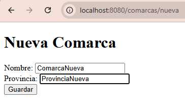 |
| http://localhost:8080/comarcas/editar/ComarcaNueva | 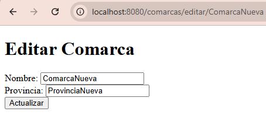 |
| http://localhost:8080/comarcas/eliminar/ComarcaNueva | 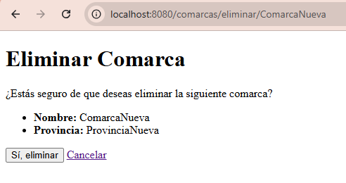 |
🔹DTO (Data Transfer Object)¶
Hasta ahora, los ejemplos mostraban cómo devolver directamente las entidades desde el controlador. Aunque esto funciona, no es una buena práctica en aplicaciones reales, ya que expone el modelo de la base de datos y puede provocar problemas de seguridad y mantenimiento.
En este ejemplo se introduce el uso de DTO (Data Transfer Object) para separar las entidades JPA de los datos que se envían al cliente.
Hasta ahora hemos visto que el Controller llama directamente al Repository. Al introducir DTO, se añade la capa Service porque ahora tenemos una nueva responsabilidad. En resumen, el repositorio sigue trabajando con entidades, el servicio transforma esas entidades en DTO y el controlador devuelve los DTO al cliente.
| Hasta ahora el Controller | Con Service + DTO, el objetivo es |
|---|---|
| - Accede directamente al Repository | - El controller solo gestiona peticiones y vistas |
| - Trabaja con entidades JPA | - La lógica de negocio y transformación va al Service |
| - Decide qué datos se muestran en la vista | |
| BD → Entity → Repository → Controller → Vista | BD → Entity → Repository → Service → DTO → Controller → Vista |
Cuándo utilizar DTO en las operaciones CRUD
Los DTO se utilizan para leer y comunicar datos, no para persistirlos:
| Operación | Uso de DTO | Explicación |
|---|---|---|
| ➕ CREATE | ⚠️ A veces | Normalmente se puede usar directamente la entidad. El DTO solo es necesario si el formulario no coincide con la entidad. |
| 🔍 READ | ✅ Sí | Al listar o mostrar datos es recomendable usar DTO, ya que los datos salen de la aplicación hacia el exterior. |
| ✏️ UPDATE | ⚠️ A veces | Se utiliza DTO cuando no queremos permitir modificar todos los campos de la entidad. |
| 🗑️ DELETE | ❌ No | No se usa DTO, ya que únicamente se envía el identificador del objeto a eliminar. |
Cambios que se introducen en cada capa
👉Paquetes que NO cambian al usar DTO
-
model → Las entidades JPA (@Entity) siguen siendo las mismas.
-
repository → Continúa trabajando con entidades y Spring Data JPA.
👉Paquetes que SÍ cambian al usar DTO
- dto (nuevo paquete) → No depende de JPA y No tiene anotaciones
ComarcaDTO.kt
package org.example.springjpa.dto
data class ComarcaDTO(
val nomC: String, //Cambiamos nom_c → nomC (más claro para la API)
val provincia: String?
)
- service (nuevo paquete) → Aquí es donde introducimos DTO correctamente.
ComarcaService.kt
package org.example.springjpa.service
import org.example.springjpa.dto.ComarcaDTO
import org.example.springjpa.repository.ComarcaRepository
import org.springframework.stereotype.Service
@Service
class ComarcaService(
private val comarcaRepository: ComarcaRepository //inyecta el Repository
) {
/**
* Devuelve el listado completo de comarcas.
* Se define en la capa Service para separar la lógica de negocio
* del controller y devolver los datos ya transformados en DTO,
* evitando que la vista trabaje directamente con entidades.
*/
fun obtenerComarcas(): List<ComarcaDTO> { //los datos van a salir hacia la vista
return comarcaRepository.findAll()
.map { comarca -> //Se usa map para transformar cada entidad en un DTO
ComarcaDTO( //Se seleccionan solo los campos necesarios
nomC = comarca.nomC, //Se pueden renombrar campos
provincia = comarca.provincia
)
}
}
// Método específico para buscar comarcas por provincia.
//Se define para que el controller no acceda al repository
// y para centralizar la conversión Entity → DTO.
fun obtenerComarcasPorProvincia(provincia: String): List<ComarcaDTO> {
return comarcaRepository.findByProvincia(provincia)
.map {
ComarcaDTO(
nomC = it.nomC,
provincia = it.provincia ?: ""
)
}
}
}
- controller → Cambiamo sel conrolador. Ahora devuelve DTO
ComarcaRestController.kt
package org.example.springjpa.controller
import org.example.springjpa.dto.ComarcaDTO
import org.example.springjpa.service.ComarcaService
import org.springframework.web.bind.annotation.*
@RestController
@RequestMapping("/api/comarcas")
class ComarcaController(
private val comarcaService: ComarcaService
) {
// Listado general
@GetMapping
fun obtenerComarcas(): List<ComarcaDTO> =
comarcaService.obtenerComarcas()
// Búsqueda por provincia
@GetMapping("/buscar")
fun obtenerComarcasPorProvincia(
@RequestParam provincia: String
): List<ComarcaDTO> =
comarcaService.obtenerComarcasPorProvincia(provincia)
}
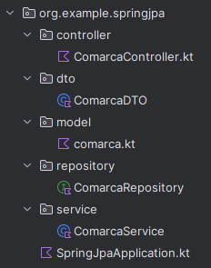
El DTO no afecta a cómo se accede a la aplicación, sino a qué información se devuelve y cómo se presenta.
🔹Ampliación (BD completa)¶
Para practicar la funcionalidad de Spring Data JPA vamos a seguir con el ejemplo SpringJPA. Recordemos que la aplicación accede a la base de datos local en Docker. En este ejemplo vamos a mapear las 3 tablas de la base de datos: comarca, poblacio e institut y a realizar los cambios necesarios para crear algunas consultas y operaciones CRUD. Utilizaremos Thymeleaf para mostrar los resultados.
-
Entidad Comarca. Ya la teníamos creada en el ejemplo anterior.
import jakarta.persistence.* @Entity @Table(name = "comarca") data class comarca( @Id @Column(name = "nom_c") val nomC: String = "", @Column(name = "provincia") val provincia: String? = null ) -
Entidad Poblacio
import jakarta.persistence.* @Entity @Table(name = "poblacio") class poblacio( @Id @Column(name = "cod_m") val codM: Int = 0, @Column(name = "nom") val nom: String = "", @Column(name = "poblacio") val poblacio: Int? = null, @Column(name = "extensio") val extensio: Double? = null, @Column(name = "altura") val altura: Int? = null, @Column(name = "longitud") val longitud: String? = null, @Column(name = "latitud") val latitud: String? = null, @Column(name = "llengua") val llengua: String? = null, @ManyToOne //clave ajena a comarca @JoinColumn(name = "nom_c", referencedColumnName = "nom_c") val comarca: Comarca? = null ) -
Entidad Institut
import jakarta.persistence.* @Entity @Table(name = "institut") data class institut( @Id @Column(name = "codi") val codi: String = "", @Column(name = "adreca") val adreca: String? = null, @Column(name = "codpostal") val codPostal: Int? = null, @Column(name = "nom") val nom: String? = null, @Column(name = "numero") val numero: String? = null, @ManyToOne //clave ajena a poblacio @JoinColumn(name = "cod_m", referencedColumnName = "cod_m") val poblacio: poblacio? = null ) -
Repositorio para Comarca: ComarcaRepository.
package org.example.springjpa.repository import org.springframework.data.jpa.repository.Query import org.springframework.data.repository.query.Param import org.example.springjpa.model.Comarca import org.springframework.data.jpa.repository.JpaRepository import org.springframework.stereotype.Repository @Repository interface ComarcaRepository : JpaRepository<Comarca, String> { @Query("SELECT c FROM Comarca c WHERE c.provincia = :provincia") fun findComarcasporProvincia(@Param("provincia") provincia: String): List<Comarca> fun findByProvincia(provincia: String): List<Comarca> } -
Repositorio para Institut: InstitutRepository
package org.example.primerspringmvc.repository import org.example.primerspringmvc.model.institut import org.springframework.data.jpa.repository.JpaRepository interface InstitutRepository : JpaRepository<institut, String> { // Obtener institutos de una población fun findByPoblacioNom(nom: String): List<institut> // Obtener institutos de una comarca fun findByPoblacioComarcaNomC(nomC: String): List<institut> // Obtener institutos de una provincia fun findByPoblacioComarcaProvincia(provincia: String): List<institut> // Obtener institutos cuya población es mayor a fun findByPoblacioPoblacioGreaterThan(poblacio: Int): List<institut> } -
Repositorio para Poblacio: PoblacioRepository
import org.example.primerspringmvc.model.poblacio import org.springframework.data.jpa.repository.JpaRepository interface PoblacioRepository : JpaRepository<poblacio, String> { // Obtener poblaciones de una comarca fun findByComarcaNomC(nomC: String): List<poblacio> // Obtener poblaciones de una provincia fun findByComarcaProvincia(provincia: String): List<poblacio> } -
Controlador para Institut: InstitutMvcController
package org.example.springjpa.controller import org.example.springjpa.repository.InstitutRepository import org.springframework.stereotype.Controller import org.springframework.ui.Model import org.springframework.web.bind.annotation.* @Controller @RequestMapping("/instituts") class InstitutController(private val institutRepository: InstitutRepository) { //Muestra todos los intitutos @GetMapping fun listarInstituts(model: Model): String { val instituts = institutRepository.findAll() model.addAttribute("instituts", instituts) return "instituts" } // Muestra institutos de una población @GetMapping("/por-poblacio") fun obtenerInstitutsPoblacio(@RequestParam poblacio: String, model: Model): String { val institutsPoblacio = institutRepository.findByPoblacioNom(poblacio) model.addAttribute("instituts", institutsPoblacio) return "instituts" // Plantilla para mostrar la lista de institutos } // Muestra institutos de una comarca @GetMapping("/por-comarca") fun obtenerInstitutsComarca(@RequestParam comarca: String, model: Model): String { val institutsComarca = institutRepository.findByPoblacioComarcaNomC(comarca) model.addAttribute("instituts", institutsComarca) return "instituts" // Plantilla para mostrar la lista de institutos } // Muestra institutos de una provincia @GetMapping("/por-provincia") fun obtenerInstitutsProvincia(@RequestParam provincia: String, model: Model): String { val institutsProvincia = institutRepository.findByPoblacioComarcaProvincia(provincia) model.addAttribute("instituts", institutsProvincia) return "instituts" // Plantilla para mostrar la lista de institutos } // Muestra institutos con población superior a un valor @GetMapping("/poblacion-superior") fun obtenerInstitutsPoblacionSuperior(@RequestParam poblacio: Int, model: Model): String { val institutsConPoblacionSuperiorA = institutRepository.findByPoblacioPoblacioGreaterThan(poblacio) model.addAttribute("instituts", institutsConPoblacionSuperiorA) return "instituts" // Plantilla para mostrar la lista de institutos } } -
Controlador para Poblacio: PoblacioMvcController
package org.example.springjpa.controller import org.example.springjpa.repository.PoblacioRepository import org.springframework.stereotype.Controller import org.springframework.ui.Model import org.springframework.web.bind.annotation.* @Controller @RequestMapping("/poblacions") class PoblacioController(private val poblacioRepository: PoblacioRepository) { // Muestra todas las poblaciones @GetMapping fun listarTodasPoblacions(model: Model): String { val poblacions = poblacioRepository.findAll() model.addAttribute("poblacions", poblacions) return "poblacions" // Vista Thymeleaf para mostrar todas las poblaciones } // Muestra las poblaciones por comarca @GetMapping("/por-comarca") fun listarPoblacionsPorComarca(@RequestParam comarca: String, model: Model): String { val poblacions = poblacioRepository.findByComarcaNomC(comarca) model.addAttribute("poblacions", poblacions) return "poblacions" // Vista Thymeleaf para mostrar las poblaciones por comarca } @GetMapping("/por-provincia") fun listarPoblacionsPorProvincia(@RequestParam provincia: String, model: Model): String { val poblacions = poblacioRepository.findByComarcaProvincia(provincia) model.addAttribute("poblacions", poblacions) return "poblacions" // Vista Thymeleaf para mostrar las poblaciones por comarca } } -
Vista instituts.html
<!DOCTYPE html> <html xmlns:th="http://www.thymeleaf.org"> <head> <title>Instituts</title> </head> <body> <h1>Llista d'Instituts</h1> <table border="1"> <tr> <th>Codi</th> <th>Nom</th> <th>Adreça</th> <th>Població</th> <th>Habitants</th> <th>Comarca</th> <th>Provincia</th> </tr> <tr th:each="institut : ${instituts}"> <td th:text="${institut.codi}">Codi</td> <td th:text="${institut.nom}">Nom</td> <td th:text="${institut.adreca}">Adreça</td> <td th:text="${institut.poblacio?.nom}">Població</td> <td th:text="${institut.poblacio?.poblacio}">Habitants</td> <td th:text="${institut.poblacio?.comarca?.nomC}">Comarca</td> <td th:text="${institut.poblacio?.comarca?.provincia}">Provincia</td> </tr> </table> </body> </html> -
Vista poblacions.html
<!DOCTYPE html> <html xmlns:th="http://www.thymeleaf.org"> <head> <title>Poblacions</title> </head> <body> <h1>Llista de Poblacions per Comarca</h1> <table border="1"> <tr> <th>Codi</th> <th>Nom</th> <th>Comarca</th> <th>Provincia</th> </tr> <tr th:each="poblacio : ${poblacions}"> <td th:text="${poblacio.codM}">Codi</td> <td th:text="${poblacio.nom}">Nom</td> <td th:text="${poblacio.comarca?.nomC}">Comarca</td> <td th:text="${poblacio.comarca?.provincia}">Provincia</td> </tr> </table> </body> </html>
Con esta configuración podemos listar los siguientes ejemplos:
- Todos los institutos: http://localhost:8080/instituts
- Todas las poblaciones: http://localhost:8080/poblacions
- Todas las comarcas: http://localhost:8080/comarcas
- Listar institutos de una población: http://localhost:8080/instituts/por-poblacio?poblacio=Gandia
- Listar institutos de una comarca: http://localhost:8080/instituts/por-comarca?comarca=Safor
- Listar institutos de una provincia: http://localhost:8080/instituts/por-provincia?provincia=Alacant
- Listar comarcas de una provincia: http://localhost:8080/comarcas/por-provincia?provincia=Alacant
- Listar poblaciones de una comarca http://localhost:8080/poblacions/por-comarca?comarca=Safor
- Listar poblaciones de una provincia: http://localhost:8080/poblacions/por-provincia?provincia=Alacant
- Listar institutos con población superior a un valor: http://localhost:8080/instituts/poblacion-superior?poblacio=20000
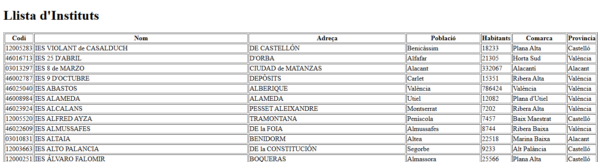
Transformación del ejemplo utilizando DTO
- Las entidades NO cambian
- Los repositorios NO cambian
- Se añaden DTO + Service
- Los Controller pasan DTO a la vista
En este ejemplo mostraremos los resultados en JSON y por tanto utilizaremos los controladores REST.
👉Nuevo paquete dto
package org.example.springjpa.dto
data class ComarcaDTO(
val nomC: String,
val provincia: String?
)
package org.example.springjpa.dto
data class PoblacioDTO(
val codM: Int,
val nom: String,
val poblacio: Int?,
val comarcaNom: String
)
package org.example.springjpa.dto
data class InstitutDTO(
val codi: String,
val nom: String?,
val adreca: String?,
val poblacioNom: String,
val comarcaNom: String,
val provincia: String
)
👉Nuevo paquete PoblacioService
package org.example.springjpa.service
import org.example.springjpa.dto.PoblacioDTO
import org.example.springjpa.repository.PoblacioRepository
import org.springframework.stereotype.Service
@Service
class PoblacioService(
private val poblacioRepository: PoblacioRepository
) {
fun obtenerPoblacionesPorComarca(nomC: String): List<PoblacioDTO> =
poblacioRepository.findByComarcaNomC(nomC).map {
PoblacioDTO(
codM = it.codM,
nom = it.nom,
poblacio = it.poblacio,
comarcaNom = it.comarca?.nomC ?: ""
)
}
}
👉Nuevo paquete InstitutService
package org.example.springjpa.service
import org.example.springjpa.dto.InstitutDTO
import org.example.springjpa.repository.InstitutRepository
import org.springframework.stereotype.Service
@Service
class InstitutService(
private val institutRepository: InstitutRepository
) {
fun obtenerInstitutosPorProvincia(provincia: String): List<InstitutDTO> =
institutRepository.findByPoblacioComarcaProvincia(provincia)
.map {
InstitutDTO(
codi = it.codi,
nom = it.nom,
adreca = it.adreca,
poblacioNom = it.poblacio?.nom ?: "",
comarcaNom = it.poblacio?.comarca?.nomC ?: "",
provincia = it.poblacio?.comarca?.provincia ?: ""
)
}
}
👉Nuevo Paquete InstitutRestcontroller
package org.example.springjpa.controller
import org.example.springjpa.service.InstitutService
import org.example.springjpa.dto.InstitutDTO
import org.springframework.web.bind.annotation.*
@RestController
@RequestMapping("/api/instituts")
class InstitutRestController(
private val institutService: InstitutService
) {
@GetMapping("/provincia")
fun obtenirPerProvincia(
@RequestParam provincia: String
): List<InstitutDTO> =
institutService.obtenerInstitutosPorProvincia(provincia)
}
👉Nuevo Paquete PoblacioRestcontroller
package org.example.springjpa.controller
import org.example.springjpa.dto.PoblacioDTO
import org.example.springjpa.service.PoblacioService
import org.springframework.web.bind.annotation.*
@RestController
@RequestMapping("/api/poblacions")
class PoblacioRestController(
private val poblacioService: PoblacioService
) {
// Obtener poblaciones de una comarca
@GetMapping("/comarca")
fun obtenirPerComarca(
@RequestParam nomC: String
): List<PoblacioDTO> =
poblacioService.obtenerPoblacionesPorComarca(nomC)
}
- Listar las poblaciones de la Comarca del Ports: http://localhost:8080/api/poblacions/comarca?nomC=Ports
- Listar las poblaciones de la provincia de València: http://localhost:8080/api/poblacions/provincia?provincia=Val%C3%A8ncia
🔹Spring Data MongoDB¶
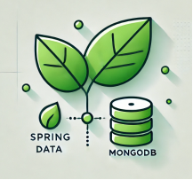
El componente Spring MongoDB Es un módulo de Spring Data que facilita la integración de aplicaciones Spring con MongoDB. Además proporciona una abstracción sobre las operaciones básicas de MongoDB como CRUD, consultas personalizadas, y soporte para agregaciones.
Requisitos
-
Tener MongoDB instalado o utilizar una instancia en la nube o en un contenedor Docker.
-
Spring Boot configurado con Maven (en nuestro caso) o Gradle.
Dependencias Maven
<dependency>
<groupId>org.springframework.boot</groupId>
<artifactId>spring-boot-starter-data-mongodb</artifactId>
</dependency>
Configuración de las propiedades
application.properties
spring.data.mongodb.host=localhost
spring.data.mongodb.port=27017
spring.data.mongodb.database=nombre_base_de_datos
Si estás usando MongoDB con autenticación, añade:
spring.data.mongodb.username=usuario
spring.data.mongodb.password=contraseña
🔹Anotaciones comunes¶
Estas anotaciones permiten mapear documentos, gestionar colecciones y realizar operaciones de manera sencilla. Las principales anotaciones utilizadas en Spring Data MongoDB son:
@Document
Se utiliza para marcar una clase como un documento MongoDB que será persistido en una colección.
@Document(collection = "coleccion")
* collection : Especifica el nombre de la colección. Si no se define, se usa el nombre de la clase en minúsculas.
@Id
Marca un campo como identificador único del documento. Este campo se mapea al campo _id en MongoDB.
@Field
Se utiliza para mapear un campo de la clase a un campo específico en el documento MongoDB.
@Field("descripcion")
val descripcionProducto: String
@Transient
Indica que un campo no debe ser persistido en la base de datos.
@Transient
val temporal: String = "No se guarda en MongoDB"
@DBRef
Se utiliza para definir una relación entre documentos, similar a una clave foránea. El atributo se mapea a una referencia en MongoDB.
@DBRef
val categoria: Categoria
@CompoundIndex
Define índices compuestos en la colección para optimizar consultas.
@CompoundIndex(def = "{'nombre': 1, 'precio': -1}", unique = true)
* def: Define los campos que forman el índice.
* unique: Indica si el índice debe ser único.
🔹Aplicación Spring Data MongoDB¶
En este apartado del tema ya tenemos que saber como crear una aplicaicón Spring Boot desde IntelliJ, solo necesitas saber las dependencias necesarias y las anotaciones para incorporar Spring Data MongoDB y poco más. El resto ya depende de lo que quieras construir con la base de datos.
Para este ejemplo partiremos de un archivo json que contiene 10 menús con sus correspondientes platos. Has de añadir este documento como una colección a tu BD Mongo. Lo tienes disponible en la carpeta recursos y también lo puedes copiar directamente.
Lo primero que debes hacer es insertar este archivo en tu MongoDB local, como una colección (InsertMany)
Archivo json con los menus:
[
{
"_id": "1",
"nombre": "Menú Mediterráneo",
"descripcion": "Un menú saludable inspirado en la dieta mediterránea.",
"fecha": "2025-01-08",
"platos": [
{
"nombre": "Ensalada Griega",
"categoria": "Entrante",
"ingredientes": ["Lechuga", "Tomate", "Pepino", "Aceitunas", "Queso Feta"],
"precio": 5.5
},
{
"nombre": "Moussaka",
"categoria": "Principal",
"ingredientes": ["Berenjena", "Carne de Cordero", "Tomate", "Bechamel", "Queso"],
"precio": 12.0
}
],
"precioTotal": 17.5
},
{
"_id": "2",
"nombre": "Menú Asiático",
"descripcion": "Sabores frescos y auténticos de Asia.",
"fecha": "2025-01-09",
"platos": [
{
"nombre": "Rollitos de Primavera",
"categoria": "Entrante",
"ingredientes": ["Zanahoria", "Col", "Brotes de Soja", "Fideos de Arroz"],
"precio": 4.0
},
{
"nombre": "Pad Thai",
"categoria": "Principal",
"ingredientes": ["Fideos de Arroz", "Camarones", "Tofu", "Maní"],
"precio": 10.0
}
],
"precioTotal": 14.0
},
{
"_id": "3",
"nombre": "Menú Vegetariano",
"descripcion": "Opciones deliciosas sin carne.",
"fecha": "2025-01-10",
"platos": [
{
"nombre": "Hummus con Pan de Pita",
"categoria": "Entrante",
"ingredientes": ["Garbanzos", "Tahini", "Limón", "Ajo"],
"precio": 4.5
},
{
"nombre": "Lasaña Vegetariana",
"categoria": "Principal",
"ingredientes": ["Pasta", "Espinacas", "Ricotta", "Tomate"],
"precio": 9.0
}
],
"precioTotal": 13.5
},
{
"_id": "4",
"nombre": "Menú Italiano",
"descripcion": "Especialidades clásicas de Italia.",
"fecha": "2025-01-11",
"platos": [
{
"nombre": "Bruschetta",
"categoria": "Entrante",
"ingredientes": ["Pan", "Tomate", "Albahaca", "Aceite de Oliva"],
"precio": 5.0
},
{
"nombre": "Pizza Margarita",
"categoria": "Principal",
"ingredientes": ["Masa de Pizza", "Tomate", "Mozzarella", "Albahaca"],
"precio": 10.0
}
],
"precioTotal": 15.0
},
{
"_id": "5",
"nombre": "Menú Mexicano",
"descripcion": "Platos picantes y llenos de sabor.",
"fecha": "2025-01-12",
"platos": [
{
"nombre": "Guacamole con Totopos",
"categoria": "Entrante",
"ingredientes": ["Aguacate", "Limón", "Cilantro", "Totopos"],
"precio": 4.5
},
{
"nombre": "Tacos al Pastor",
"categoria": "Principal",
"ingredientes": ["Tortilla", "Carne de Cerdo", "Piña", "Cebolla"],
"precio": 9.0
}
],
"precioTotal": 13.5
},
{
"_id": "6",
"nombre": "Menú Americano",
"descripcion": "Comida clásica de los Estados Unidos.",
"fecha": "2025-01-13",
"platos": [
{
"nombre": "Alitas de Pollo",
"categoria": "Entrante",
"ingredientes": ["Pollo", "Salsa BBQ", "Especias"],
"precio": 6.0
},
{
"nombre": "Hamburguesa con Queso",
"categoria": "Principal",
"ingredientes": ["Pan", "Carne de Res", "Queso", "Lechuga"],
"precio": 10.0
}
],
"precioTotal": 16.0
},
{
"_id": "7",
"nombre": "Menú de Mariscos",
"descripcion": "Frescos sabores del océano.",
"fecha": "2025-01-14",
"platos": [
{
"nombre": "Cóctel de Camarones",
"categoria": "Entrante",
"ingredientes": ["Camarones", "Salsa Cóctel", "Limón"],
"precio": 7.0
},
{
"nombre": "Paella de Mariscos",
"categoria": "Principal",
"ingredientes": ["Arroz", "Camarones", "Mejillones", "Calamares"],
"precio": 12.0
}
],
"precioTotal": 19.0
},
{
"_id": "8",
"nombre": "Menú Francés",
"descripcion": "Platos refinados y elegantes.",
"fecha": "2025-01-15",
"platos": [
{
"nombre": "Quiche Lorraine",
"categoria": "Entrante",
"ingredientes": ["Huevo", "Nata", "Tocino", "Queso Gruyère"],
"precio": 6.5
},
{
"nombre": "Ratatouille",
"categoria": "Principal",
"ingredientes": ["Berenjena", "Calabacín", "Tomate", "Pimiento"],
"precio": 9.5
}
],
"precioTotal": 16.0
},
{
"_id": "9",
"nombre": "Menú Indio",
"descripcion": "Sabores especiados y exóticos.",
"fecha": "2025-01-16",
"platos": [
{
"nombre": "Samosas",
"categoria": "Entrante",
"ingredientes": ["Papas", "Especias", "Masa Frita"],
"precio": 4.0
},
{
"nombre": "Pollo Tikka Masala",
"categoria": "Principal",
"ingredientes": ["Pollo", "Salsa de Tomate", "Especias", "Crema"],
"precio": 11.0
}
],
"precioTotal": 15.0
},
{
"_id": "10",
"nombre": "Menú Japonés",
"descripcion": "Delicados sabores de Japón.",
"fecha": "2025-01-17",
"platos": [
{
"nombre": "Sopa de Miso",
"categoria": "Entrante",
"ingredientes": ["Miso", "Tofu", "Alga Wakame"],
"precio": 3.5
},
{
"nombre": "Sushi Variado",
"categoria": "Principal",
"ingredientes": ["Arroz", "Pescado", "Alga Nori", "Vegetales"],
"precio": 12.5
}
],
"precioTotal": 16.0
}
]
Modelo MVC
Lo siguiente será crear la estructura del modelo MVC con los archivos necesarios. En la siguiene imagen podeis ver como quedará:
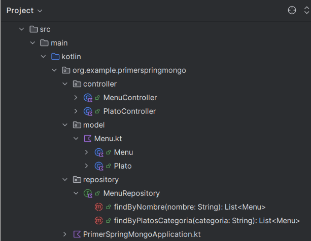
Modelo
Los modelos son las clases que representan las colecciones en MongoDB.
Menu.kt
import org.springframework.data.annotation.Id
import org.springframework.data.mongodb.core.mapping.Document
@Document(collection = "menus") // Nombre de la colección en MongoDB
data class Menu(
@Id
val id: String, // Identificador único del menú
val nombre: String, // Nombre del menú
val descripcion: String, // Descripción del menú
val fecha: String, // Fecha asociada al menú
val platos: List<Plato> = emptyList(), // Lista de platos
val precioTotal: Double = 0.0 // Precio total del menú
)
data class Plato(
val nombre: String,
val categoria: String,
val ingredientes: List<String> = emptyList(),
val precio: Double = 0.0
)
Repositorios
Proporciona una interfaz MongoRepository que simplifica las operaciones CRUD.
MenuRepository.kt
import org.springframework.data.mongodb.repository.MongoRepository import org.springframework.stereotype.Repository import org.example.primerspringmongo.model.*
@Repository
interface MenuRepository : MongoRepository<Menu, String> {
fun findByNombre(nombre: String): List<Menu>
fun findByPlatosCategoria(categoria: String): List<Menu>
}
Controlador
Gestiona las solicitudes entrantes, procesa datos y determina las respuestas adecuadas.
MenuController.kt
import org.example.primerspringmongo.model.Menu
import org.example.primerspringmongo.repository.MenuRepository
import org.springframework.stereotype.Controller
import org.springframework.ui.Model
import org.springframework.web.bind.annotation.*
@Controller
@RequestMapping("/menus")
class MenuController(private val menuRepository: MenuRepository) {
// Listar todos los menús
@GetMapping
fun listarMenus(model: Model): String {
val menus = menuRepository.findAll()
model.addAttribute("menus", menus)
return "menus/listar"
}
@GetMapping("/buscar")
fun buscarPorNombre(@RequestParam nombre: String, model: Model): String {
val menus = menuRepository.findByNombre(nombre) // Consulta en el repositorio
model.addAttribute("menus", menus) // Pasar los menús al modelo
model.addAttribute("nombre", nombre) // Pasar el nombre buscado
return "menus/listar" // Nombre de la plantilla Thymeleaf
}
// Guardar un nuevo menú
@PostMapping("/guardar")
fun guardarMenu(@ModelAttribute menu: Menu): String {
menuRepository.save(menu)
return "redirect:/menus"
}
// Ver detalles de un menú
@GetMapping("/{id}")
fun verDetalles(@PathVariable id: String, model: Model): String {
val menu = menuRepository.findById(id)
if (menu.isPresent) {
model.addAttribute("menu", menu.get())
return "menus/detalles"
}
return "redirect:/menus"
}
// Mostrar formulario para editar un menú
@GetMapping("/editar/{id}")
fun mostrarFormularioEditar(@PathVariable id: String, model: Model): String {
val menu = menuRepository.findById(id)
if (menu.isPresent) {
model.addAttribute("menu", menu.get())
return "menus/editar"
}
return "redirect:/menus"
}
// Actualizar un menú existente
@PostMapping("/actualizar/{id}")
fun actualizarMenu(@PathVariable id: String, @ModelAttribute menu: Menu): String {
if (menuRepository.existsById(id)) {
menuRepository.save(menu)
}
return "redirect:/menus"
}
// Eliminar un menú
@GetMapping("/eliminar/{id}")
fun eliminarMenu(@PathVariable id: String): String {
menuRepository.deleteById(id)
return "redirect:/menus"
}
}
PlatoController.kt
import org.example.primerspringmongo.repository.MenuRepository
import org.springframework.stereotype.Controller
import org.springframework.ui.Model
import org.springframework.web.bind.annotation.*
@Controller
@RequestMapping("/platos")
class PlatoController(private val menuRepository: MenuRepository) {
// Listar todos los platos de un menú
@GetMapping("/{menuId}")
fun listarPlatos(@PathVariable menuId: String, model: Model): String {
val menu = menuRepository.findById(menuId)
if (menu.isPresent) {
model.addAttribute("menu", menu.get())
model.addAttribute("platos", menu.get().platos)
return "platos/listar"
}
return "redirect:/menus"
}
@GetMapping("/categoria")
fun buscarPorCategoria(@RequestParam categoria: String, model: Model): String {
val menus = menuRepository.findByPlatosCategoria(categoria) // Consulta en el repositorio
model.addAttribute("menus", menus) // Lista de menús encontrados
model.addAttribute("categoriaBuscada", categoria) // Categoría buscada
return "platos/buscarPorCategoria" // Plantilla Thymeleaf
}
@GetMapping("/{menuId}/ingredientes/{platoNombre}")
fun verIngredientes(
@PathVariable menuId: String,
@PathVariable platoNombre: String,
model: Model
): String {
val menu = menuRepository.findById(menuId)
if (menu.isPresent) {
val plato = menu.get().platos.find { it.nombre == platoNombre }
if (plato != null) {
println("Plato encontrado: $plato")
println("Ingredientes: ${plato.ingredientes}")
model.addAttribute("menu", menu.get())
model.addAttribute("plato", plato)
model.addAttribute("ingredientes", plato.ingredientes ?: emptyList<String>())
return "platos/ingredientes"
}
}
model.addAttribute("error", "El plato o el menú no existen.")
return "error"
}
}
Vista
Permiten visualizar los resultados con un formato personalizado. En la siguiente imagen tenéis la estructura de los archivos:
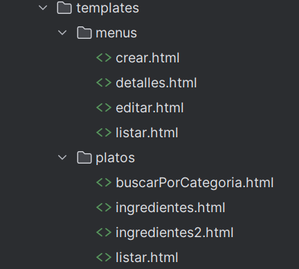
Vistas para visualizar los menus: /menus
listar.html
<!DOCTYPE html>
<html xmlns:th="http://www.thymeleaf.org">
<head>
<title>Lista de Menús</title>
</head>
<body>
<h1>Lista de Menús</h1>
<a href="/menus/crear">Crear Nuevo Menú</a>
<table border="1">
<thead>
<tr>
<th>Nombre</th>
<th>Descripción</th>
<th>Acciones</th>
</tr>
</thead>
<tbody>
<tr th:each="menu : ${menus}">
<td th:text="${menu.nombre}"></td>
<td th:text="${menu.descripcion}"></td>
<td>
<a th:href="@{'/menus/' + ${menu.id}}">Detalles</a>
<a th:href="@{'/menus/editar/' + ${menu.id}}">Editar</a>
<a th:href="@{'/menus/eliminar/' + ${menu.id}}" onclick="return confirm('¿Seguro que quieres eliminar este menú?')">Eliminar</a>
</td>
</tr>
</tbody>
</table>
</body>
</html>
crear.html
<!DOCTYPE html>
<html xmlns:th="http://www.thymeleaf.org">
<head>
<title>Crear/Editar Menú</title>
</head>
<body>
<h1 th:text="${#strings.equals(menu.id, '') ? 'Crear Nuevo Menú' : 'Editar Menú'}"></h1>
<form th:action="@{${#strings.equals(menu.id, '') ? '/menus/guardar' : '/menus/actualizar/' + menu.id}}" th:object="${menu}" method="post">
<label for="nombre">Nombre:</label>
<input type="text" id="nombre" name="nombre" th:value="${menu.nombre}" required><br>
<label for="descripcion">Descripción:</label>
<textarea id="descripcion" name="descripcion" th:text="${menu.descripcion}" required></textarea><br>
<label for="fecha">Fecha:</label>
<input type="date" id="fecha" name="fecha" th:value="${menu.fecha}" required><br>
<label for="precioTotal">Precio Total:</label>
<input type="number" id="precioTotal" name="precioTotal" th:value="${menu.precioTotal}" step="0.01" required><br>
<button type="submit">Guardar</button>
<a href="/menus">Cancelar</a>
</form>
</body>
</html>
detalles.html
<!DOCTYPE html>
<html xmlns:th="http://www.thymeleaf.org">
<head>
<title>Detalles del Menú</title>
</head>
<body>
<h1>Detalles del Menú</h1>
<p><strong>Nombre:</strong> <span th:text="${menu.nombre}"></span></p>
<p><strong>Descripción:</strong> <span th:text="${menu.descripcion}"></span></p>
<p><strong>Fecha:</strong> <span th:text="${menu.fecha}"></span></p>
<p><strong>Precio Total:</strong> <span th:text="${menu.precioTotal}"></span></p>
<h2>Platos</h2>
<ul>
<li th:each="plato : ${menu.platos}">
<strong th:text="${plato.nombre}"></strong> - <span th:text="${plato.categoria}"></span>
(<span th:text="${plato.precio}"></span> €)
</li>
</ul>
<a href="/menus">Volver</a>
</body>
</html>
editar.html
<!DOCTYPE html>
<html xmlns:th="http://www.thymeleaf.org">
<head>
<title>Crear/Editar Menú</title>
</head>
<body>
<h1 th:text="${#strings.equals(menu.id, '') ? 'Crear Nuevo Menú' : 'Editar Menú'}"></h1>
<form th:action="@{${#strings.equals(menu.id, '') ? '/menus/guardar' : '/menus/actualizar/' + menu.id}}" th:object="${menu}" method="post">
<label for="nombre">Nombre:</label>
<input type="text" id="nombre" name="nombre" th:value="${menu.nombre}" required><br>
<label for="descripcion">Descripción:</label>
<textarea id="descripcion" name="descripcion" th:text="${menu.descripcion}" required></textarea><br>
<label for="fecha">Fecha:</label>
<input type="date" id="fecha" name="fecha" th:value="${menu.fecha}" required><br>
<label for="precioTotal">Precio Total:</label>
<input type="number" id="precioTotal" name="precioTotal" th:value="${menu.precioTotal}" step="0.01" required><br>
<button type="submit">Guardar</button>
<a href="/menus">Cancelar</a>
</form>
</body>
</html>
Vistas para visualizar los platos: /platos
listar.kt
<!DOCTYPE html>
<html xmlns:th="http://www.thymeleaf.org">
<head>
<title>Platos del Menú</title>
</head>
<body>
<h1 th:text="'Platos del Menú: ' + ${menu.nombre}"></h1>
<a th:href="@{/menus}">Volver a Menús</a>
<table border="1">
<thead>
<tr>
<th>Nombre</th>
<th>Categoría</th>
<th>Precio</th>
<th>Ingredientes</th>
</tr>
</thead>
<tbody>
<tr th:each="plato : ${platos}">
<td th:text="${plato.nombre}"></td>
<td th:text="${plato.categoria}"></td>
<td th:text="${plato.precio} + ' €'"></td>
<td>
<a th:href="@{'/platos/' + ${menu.id} + '/ingredientes/' + ${plato.nombre}}">Ver Ingredientes</a>
</td>
</tr>
</tbody>
</table>
</body>
</html>
ingredientes.html
<!DOCTYPE html>
<html xmlns:th="http://www.thymeleaf.org">
<head>
<title>Ingredientes</title>
</head>
<body>
<h1 th:text="'Ingredientes del plato: ' + ${plato?.nombre}"></h1>
<div th:if="${error}">
<p th:text="${error}" style="color: red;"></p>
</div>
<ul th:if="${ingredientes != null && !ingredientes.isEmpty()}">
<li th:each="ingrediente : ${ingredientes}" th:text="${ingrediente}"></li>
</ul>
<p th:if="${ingredientes == null || ingredientes.isEmpty()}" style="color: gray;">
No hay ingredientes disponibles para este plato.
</p>
<a th:href="@{'/platos/' + ${menu.id}}">Volver a los platos</a>
</body>
</html>
buscarPorCategoria.html
<!DOCTYPE html>
<html xmlns:th="http://www.thymeleaf.org">
<head>
<title>Buscar Menús por Categoría</title>
</head>
<body>
<h1>Resultados para categoría: <span th:text="${categoriaBuscada}"></span></h1>
<table border="1" th:if="${menus}">
<thead>
<tr>
<th>ID</th>
<th>Nombre</th>
<th>Descripción</th>
<th>Platos</th>
</tr>
</thead>
<tbody>
<tr th:each="menu : ${menus}">
<td th:text="${menu.id}"></td>
<td th:text="${menu.nombre}"></td>
<td th:text="${menu.descripcion}"></td>
<td>
<ul>
<li th:each="plato : ${menu.platos}" th:if="${plato.categoria == categoriaBuscada}" th:text="${plato.nombre}"></li>
</ul>
</td>
</tr>
</tbody>
</table>
<p th:if="${menus == null || menus.isEmpty()}" style="color: gray;">
No se encontraron menús con platos de la categoría <span th:text="${categoriaBuscada}"></span>.
</p>
<a href="/menus">Volver a la lista de menús</a>
</body>
</html>
Con esta configuración podemos listar los siguientes ejemplos:
http://localhost:8888/menus : Lista todos los menús
http://localhost:8888/menus/buscar?nombre=Menú Vegetariano: Busca un menú concreto.
http://localhost:8888/platos/1: Lista los platos del menú 1.
http://localhost:8888/platos/1/ingredientes/Ensalada Griega: Lista los ingredients del plato del menú 1.
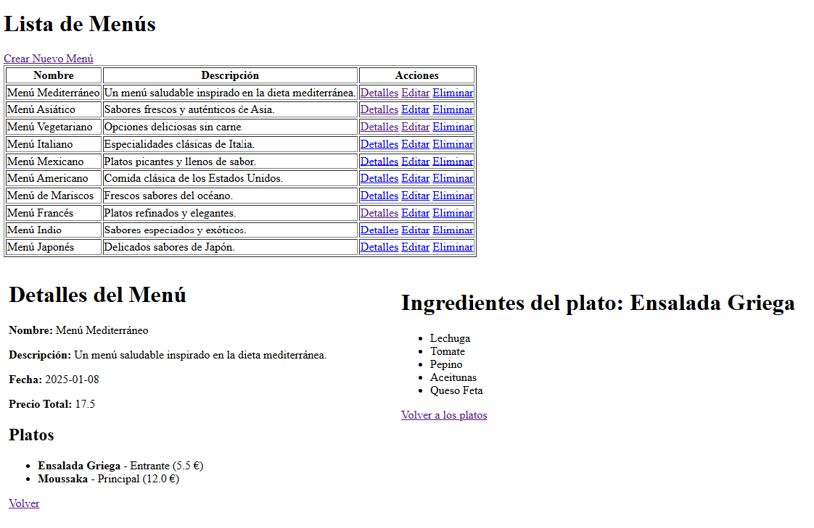
Nota
Estos son alugunos ejemplos pero podéis modificar el controlador y crear nuevas vistas para añadir funcionalidad al programa y que muestre más resultados.